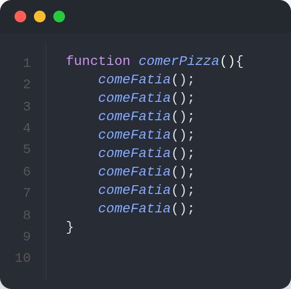
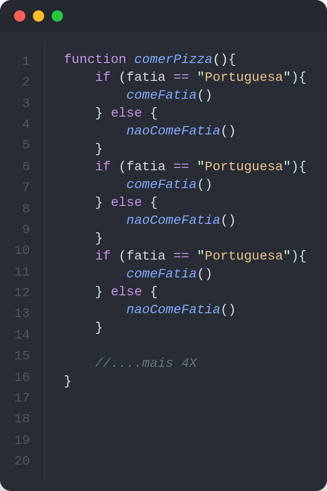

Repetições em JavaScript permitem que um bloco de código seja executado várias vezes.
por exemplo, imagine que voce queira comer uma piza e ai criamos a função comerPiza(), e ela vai executar a função para comer uma fatia até que a pizza acabe, ou seja, come 8 pedaços

Ou seja, programar é basicamente voce sair de um ponto A e ir para um ponto B, programar é saber fazer isso via codigos, ou sejaaa, voce saber solucionar e aplicar ideias que só existem no mundo da imaginação
como no nosso exemplo o objetivo é comer a pizza, e para isso criamos a função comerPizza() que vai executar a função comeFatia() 8 vezes, ou seja, vai comer 8 fatias de pizza, que é até o fim dela
pois bem, para isso temos as estruturas de controle são elas que usaremos para "controlar" nosso codigo para chegar onde queremos.
um exemplo de estrutura de controle é Sequencial que onde vamos do ponto A para o B executando tarefas sequenciais até chegar ao objetivo, como por exemplo a pizza, que comemos a fatia sequecialmente até acabar
Mas nem tudo são flores pois há objetivos que não conseguimos alcançar numa sequencia, eles podem ter desvios e possibilidades, ou seja, condições (if else), ainda usando o exemplo da pizza:
Imagine um pizza de dois sabores Portuguesa e Marguerita, eu não gosto de marguerita, mas como a de portuguesa, conseguiu ver que há um impecilio no objetivo? agora não é só comer fatia, temos tambem a verificação da fatia, em codigo seria algo como:

nessa sequencia foi necessária a verificação de pizza, mas agora vamos ver as Repetições